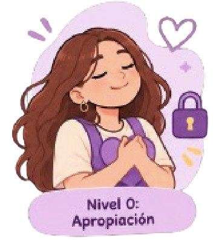
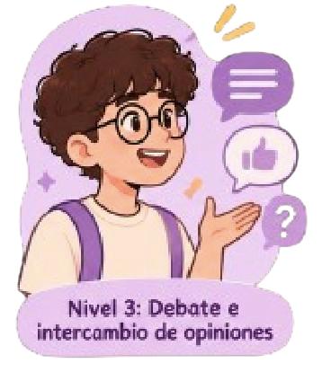
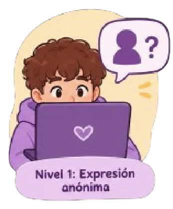
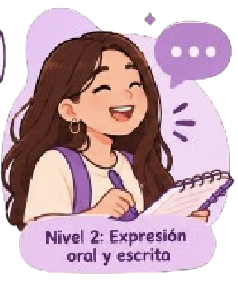

Tu proceso no es lineal, recuerda que puedes iniciar
donde desees, y trabajar a tu ritmo

Nivel 0:Apropiación
Retroalimentación

Nivel 3: Debate eintercambio de opiniones

Nivel 1: Expresiónanónima

Nivel 2: Expresiónoral y escrita